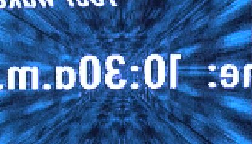

Histoire du Cyberpunk
Introduction
... L'esprit humain libre, qui construit l'avenir, nous a emporté dans une nouvelle ère : l'ère cybernétique. L'invention de l'électricité et du téléphone marque le début de l'ascension de l'humanité. La diffusion du son et de l'image a changé la vie des humains pour toujours...
Avec chaque nouvelle invention, le monde, enfant de l'ère nouvelle, évolue. L'humanité entrevoit des millions de nouvelles opportunités. L'ordinateur, la plus grande invention de l'humanité jamais réalisée depuis la découverte de l'électricité, issu de l'intelligence bouillonnante des hommes, est devenu la création la plus utilisée dans nos vies quotidiennes... Cette nouvelle invention a ouvert une porte vers une nouvelle dimension, les "cybermondes" également connus sous le nom de Réalité Virtuelle. Des mondes conçus par ordinateur sont devenus une toute nouvelle branche technologique, accumulant de plus en plus de fidèles... Après cela, le monde ne pourra plus jamais être comme avant.
Cette nouvelle ère a aussi engendré le premier crime envers le monde électronique. L'ère cybernétique nous a apporté plus de violence, plus de haine dans l'âme de l'Homme, plus de douleurs et plus de souffrances... Les crimes ont migré vers ce nouveau monde, un monde de 0 et de 1... De nouvelles communautés ont émergé du monde des données. Hackers, FreeJacks et Phreakers, ils sont devenus les nouveaux dirigeants de ce monde. Ils y ont apporté le chaos, mais également la connaissance aux masses.
Les Cyberpunks, descendants de l'ère cybernétique, sont devenus la culture du nouveau monde. La petite communauté de libres penseurs a commencé à grandir et à attirer de plus en plus de gens vers une nouvelle cause : l'Information c'est le pouvoir ! L'Information se doit d'être libre ! Le nouveau monde a été baptisé "cyberespace" par un des membre de cette nouvelle société... Le cyberespace devient une maison pour les Cyberpunks et pour le monde souterrain. Les Hackers, Phreakers et autres Cyberpunks ont alors commencé leur domination et ont imposé leur loi : aucune loi ! Aucune règle !
Ils ont commencé la création...
... la création d'une nouvelle dimension, en créant le cyberespace...
-- Mad Maniac, 1996
Documents
- Cyber + Punk = Cyberpunk
- Création du mot "cyberpunk", fusion de "cyber" et "punk".
- Chronologie Cyberpunk
- Année par année, l'histoire du cyber, du punk et du cyberpunk.
- L'étymologie de "Cyberpunk"
- En préface de Cyberpunk, Bruce Bethke lui-même raconte comment, quand et pourquoi il a inventé le terme cyberpunk.
- Cyberpunk R.I.P.
- An Wired Magazine article about death of the cyberpunk movement.
- Le Cyberpunk est-il mort ?
- Ces dernières années, c'est la mode de dire que le cyberpunk est mort. Vraiment ?
- Cyberpunk Lives !
- Orwell via Huxley
History of Cyberpunk Science Fiction
These papers tell about cyberpunk history, from pre-cyberpunk science fiction to '80s cyberpunk, and to cyberpunk nowadays.
- Eighties Cyberpunk
- Cyberpunk, a new form of science fiction written by a group of five writers. An essay about the early years by Barbara Lisele Zavala.
- After the Deluge : Cyberpunk in the '80s and '90s
- Cyberpunk in the Nineties
- The Movement in America
- The history of cyberpunk movement, born in America.
- Notes Toward a Postcyberpunk Manifesto
- An essay by Lawrence Person. Discusses exactly why original cyberpunk works like Neuromancer were important, and why the work people like Stephenson, Sterling, Egan, Macleod, etc. are doing right now should more properly be thought of as postcyberpunk.
Cyberpunk Subculture : Past and Present
These papers recount the evolution and history of cyberpunk as a cultural theme. They place the cyberpunk culture in an historical context.
- Fiction That Bleeds Truth
- Cyberpunk - From Subculture to Mainstream
- From subcultures of the 60s and 70s to cyberpunk.
- Cyberpunk - Terminal Chic ?
- Article by Nathan Cobb, from the Boston Globe, about cyberpunk culture, specifically the differences between hackers and punks, how the two cultures merged, and the resulting cyberculture.
- Le Cyberpunk, contre-culture des années 90 ?
- Cet article examine le phénomène Cyberpunk et analyse l'opportunité d'attribuer l'étiquette "contre-culture" aux cyberpunks.
- Slacker's Manifesto
- Talkin 'Bout My Generation
- Ruminations and convolutions on the substance of Cyberpunk
- Dr. Odd's ruminations and convolutions on the substance of Cyberpunk, its future, and its relationship to modern culture. From e-zine Screamsheet.
- Down Among the Cyberpunks